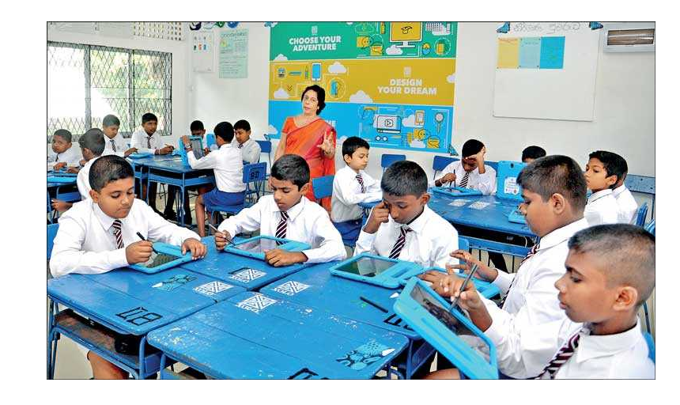

Narrowing The Gap
Locally
The gap is narrowing locally because the government doing many changes to bridge the gap by providing tabs and internet facility to all the government children’s free of charge. So they use the facility to do their school assessments and homework. As a result, it increases the opportunity of the student to have a better education because a lot of resources are available on the internet for students. 
Another reason which results narrowing the gap is, Technology is cheap in now over the years has passed away. As an example buying a computer is considerably very expensive in past decades but it is not much expensive now because due to the benefit that it provides, people are making many computers for every type of economical individuals.
Globally
The gap is narrowing too because many organizations are helping to bridge the gap as an example UNICEF provide facilities to many poor countries make good technological environment. Providing technology alone is not sufficient to bridge the gap because knowledge should also provide with the technology in order to get most out of it.
The gap can be reduced by decreasing poverty from third world countries. The digital divide has influenced highly to many countries that can’t afford good technological environment. To take more benefit from the technology poverty should be decreased.
There is another way that can use to narrow the gap by giving knowledge to the people by using well-qualified ICT teachers. Some have many equipment’s but due to their lack of knowledge they are not able to take most of using their devices, if we can provide good technical knowledge to the people of the world then we can reduce the gap rapidly.